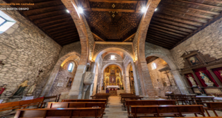

Interior: Retablos barrocos, capilla del Evangelio y arcos gótico-mudéjar únicos. Si la iglesia está cerrada, te va a interesar este link. Más info

Fachada: Entrada en piedra y ladrillo con campanario de cinco campanas.
üéº Reto del √ìrgano
üéπ Toca las teclas del antiguo √≥rgano siguiendo la secuencia secreta.
Pista: Las campanas de San Martín tañen con el alba: DO, FA, RE, SOL
Fragmento del Mensaje: la fe del pueblo guía las almas...
QR en el pueblo: IGLESIA-1300
Dato Curioso: Se conserva una estela funeraria romana a la izquierda del portal. Sugerencia: si la fortuna os acompaña y la panadería está abierta podréis adquirir sus famosas perronillas... a lo mejor os dan alguna pista.